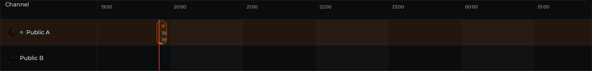
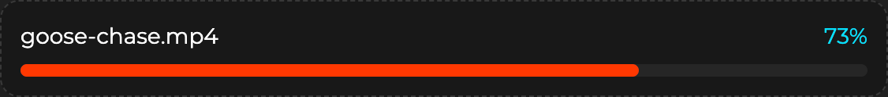
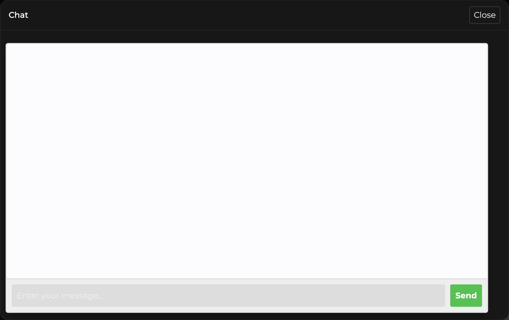
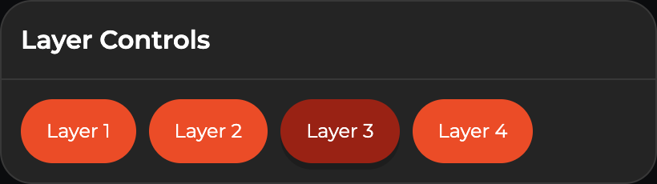

LiveScape.TV
LiveScape is a live television and streaming platform designed to replicate and expand on the experience of traditional broadcast TV. It combines linear channel-based viewing with interactive features, allowing users to engage with content and creators in real-time.
I joined the project during an active development phase as part of my practicum, where I was responsible for improving core user experiences and contributing to the front-end architecture. Working within an existing codebase, I focused on refining playback logic, optimizing performance, and integrating interactive features to bring the platform closer to a true “live TV” experience.

The Challenge
While the platform had a strong foundation, several key areas were limiting the user experience.
Playback was tied to individual programs rather than channels, forcing users to manually restart streams when content changed and breaking the sense of a continuous broadcast.
Performance was another concern, particularly around media uploads. The existing sequential upload system was reliable but slow, creating friction for content creators.
Interactive mini apps, such as chat and voting, were built on an outdated system that no longer integrated cleanly with the platform, leaving core features non-functional.
Additionally, although the platform supported multiple video layers, there were no front-end controls for users to access or switch between them.
At the same time, I had no prior experience with modern frameworks, web applications, or React. I needed to quickly learn the stack while contributing to a live codebase and solving real production challenges.
The Process
Learning React
To ramp up quickly, I spent my first week focused entirely on learning the core tools used in the project, including React, Vite, React Router, and Tailwind CSS. I worked through official documentation and supplemented it with bits and pieces of LinkedIn Learning courses to build a solid foundation as quickly as possible.
I started with smaller, low-risk tasks, such as refactoring basic JavaScript logic and updating the UI, and then quickly worked up to more complex features. Learning and building in parallel let me contribute to the project while continuously improving.
To keep up, I continued learning by auditing a Web Application Development course focused on Next.js. While some concepts required adapting to a separate backend architecture, this experience strengthened my understanding of component design, state management, and modern frontend patterns.
Video Streaming Flow & Channel Playback
Originally, users had to manually select a program to start playback, and repeat the process every time a new program began. This broke the intended live television experience and made channel surfing feel clunky.
The goal was to shift from program-based playback to channel-based playback, allowing users to enter a channel once and remain in a continuous stream.
To achieve this, I reworked the connection logic to start at the channel level rather than selecting programs. I also implemented a system to continuously track the active program and dynamically update the current program details in real-time.

Refactoring Upload Architecture
Video uploads were originally handled sequentially, processing one chunk at a time. While this approach was reliable, it was slow and inefficient for larger files.
I implemented a concurrent chunk upload system using a queue-based approach, allowing multiple chunks to upload simultaneously while automatically retrying failed chunks. Integrating this required adapting the new logic into the existing workflow and fine-tuning the system to balance speed and stability.

Mini App Integration
Mini apps, such as chat and voting, were hosted on a separate application that had not been maintained for several years and no longer integrated with the current platform.
Rebuilding the system from scratch wasn’t feasible within the project timeline, so the challenge became making the old and new technologies work together.
I worked through the separate application, resolved integration issues, and established a reliable connection between systems to support real-time interaction. This required adapting outdated logic to function within the modern platform environment.

Channel Layer Selection
LiveScape supports multiple stream layers per channel, such as different camera angles or feeds, but there was no intuitive or reliable way for users to switch between them.
The goal was to make layer selection feel seamless and responsive without interrupting playback.
To achieve this, I implemented dynamic detection of available layers and built UI controls that allow users to switch between streams in real-time. I also updated the streaming logic to ensure smooth transitions and handle cases where certain layers were unavailable.

The Solution
I improved the platform by restructuring playback around channels instead of individual programs, optimizing media uploads through a more efficient architecture, restoring real-time interactivity through mini app integration, and introducing seamless layer switching for multi-view content.
The Results
-
75%
Manual playback selection reduction after optiimization -
41%
Typical video upload time reduction after optimization -
0 - 100%
Functionality before and after integrating mini apps